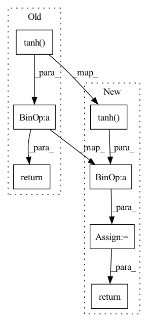

Pattern ID :1513
Before Change
@staticmethod
def forward(x: torch.Tensor) -> torch.Tensor:
return x * (torch.tanh( F.softplus(x)))
class Sine(nn.Module):
r Applies the sine function element-wise.After Change
@staticmethod
def forward(x: torch.Tensor) -> torch.Tensor:
out = x * (torch.tanh( torch.nn.functional.softplus(x)))
return out
class Sine(nn.Module):In pattern: SUPERPATTERN
Frequency: 3
Non-data size: 7
Instances Fragment ID: 4403819
Project Name: lornatang/cgan-pytorch
Commit Name: 48ea9c692c84adbc58264a1e23745546b245cee6
Time: 2021-06-01
Author: liuchangyu1111@gmail.com
File Name: cgan_pytorch/activation.py
M Class Name: Mish
N Class Name: Mish
M Method Name: forward(1)
N Method Name: forward(1)
M Parent Class: nn.Module
N Parent Class: nn.Module
M File Name: cgan_pytorch/activation.py
N File Name: cgan_pytorch/activation.py
M Start Line: 105
M End Line: 105
N Start Line: 111
N End Line: 113
Before Change
@staticmethod
def forward(x: torch.Tensor) -> torch.Tensor:
return x * (torch.tanh( F.softplus(x)))
class Sine(nn.Module):
r Applies the sine function element-wise.After Change
@staticmethod
def forward(x: torch.Tensor) -> torch.Tensor:
out = x * (torch.tanh( torch.nn.functional.softplus(x)))
return out
class Sine(nn.Module): Fragment ID: 4403821
Project Name: lornatang/gan-pytorch
Commit Name: 5029d750ce2b69ae170c75cc1cf673500cd74503
Time: 2021-06-01
Author: liuchangyu1111@gmail.com
File Name: gan_pytorch/activation.py
M Class Name: Mish
N Class Name: Mish
M Method Name: forward(1)
N Method Name: forward(1)
M Parent Class: nn.Module
N Parent Class: nn.Module
M File Name: gan_pytorch/activation.py
N File Name: gan_pytorch/activation.py
M Start Line: 105
M End Line: 105
N Start Line: 111
N End Line: 113
Before Change
def forward(self, state):
a = F.relu(self.l1(state))
a = F.relu(self.l2(a))
return self.max_action * torch.tanh( self.l3(a))
class Critic(nn.Module):
def __init__(self, state_dim, action_dim):After Change
logp_pi -= (2 * (np.log(2) - action - F.softplus(-2 * action))).sum(axis=1)
logp_pi = torch.unsqueeze(logp_pi, dim=1)
action = self.max_action * torch.tanh( action)
mu = torch.tanh(mu) * self.max_action
return action, logp_pi, mu
def get_log_density(self, state, action):
a = F.relu(self.fc1(state)) Fragment ID: 4403820
Project Name: ryanxhr/dwbc
Commit Name: 7bf8e90c7bbf238b9a80c6c033844d37a17e898e
Time: 2022-06-24
Author: xuhaoran8@jd.com
File Name: algos/DWBC.py
M Class Name: Actor
N Class Name: Actor
M Method Name: forward(2)
N Method Name: forward(2)
M Parent Class: nn.Module
N Parent Class: nn.Module
M File Name: algos/DWBC.py
N File Name: algos/DWBC.py
M Start Line: 22
M End Line: 23
N Start Line: 36
N End Line: 52